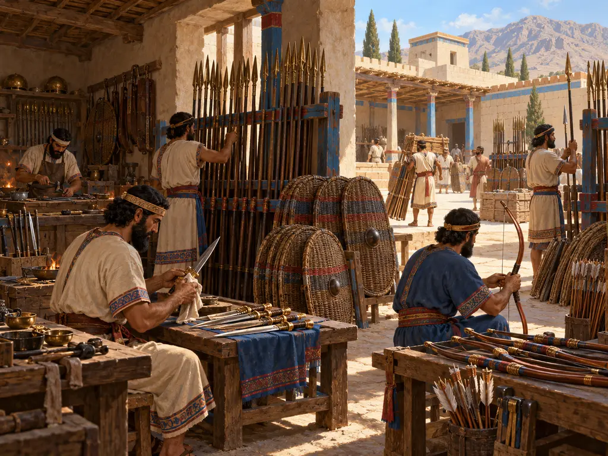
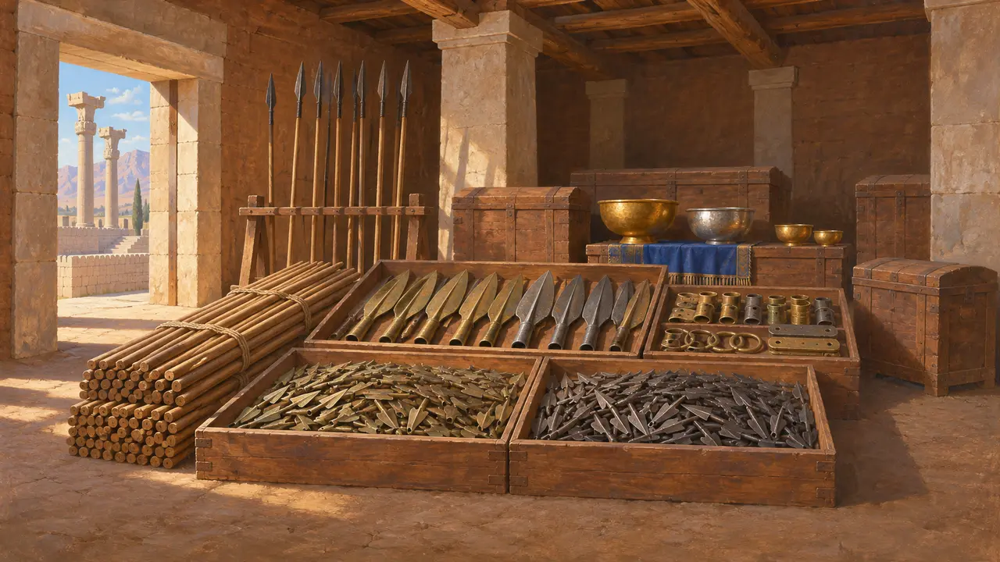
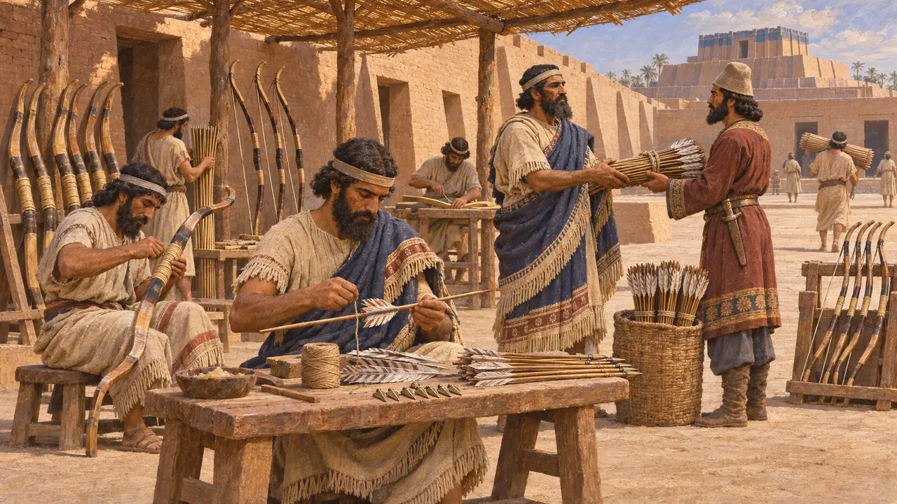
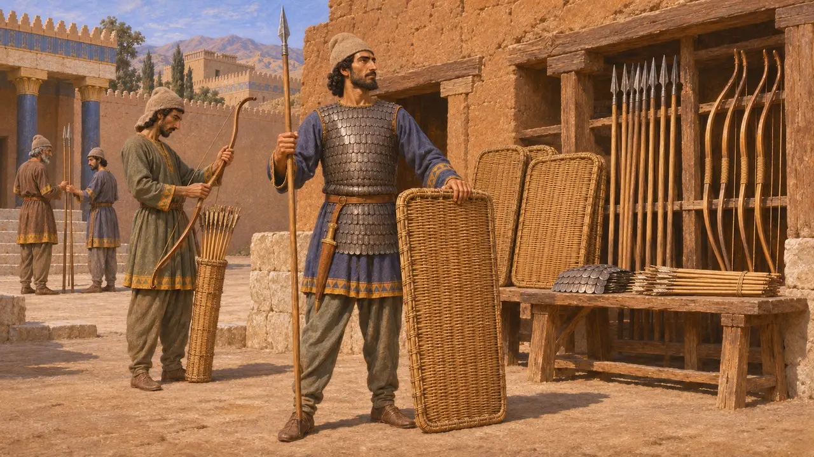
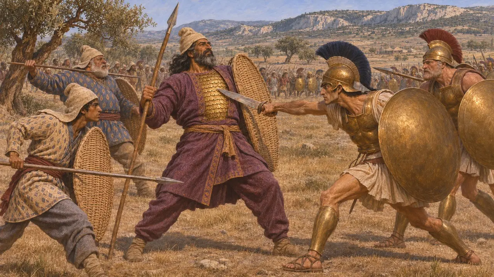
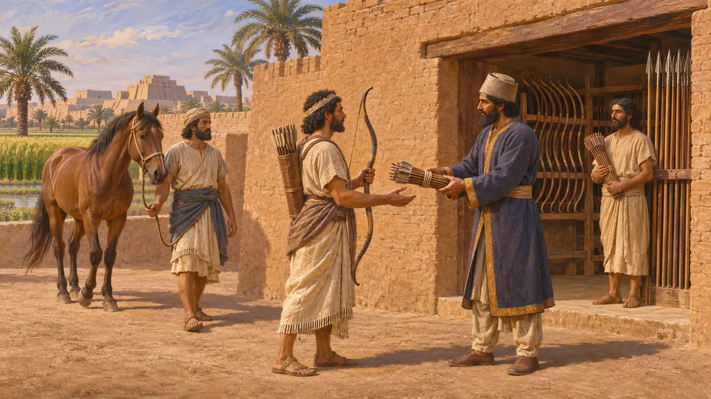

Оружейная
Мастерские и хранилища царского оружия, Персидская держава, около 550–479 годов до н. э.
В игре: Уровень 2: Копьеносец
Персидское войско сражалось главным образом луком, коротким копьём и плетёным щитом, и всё это приходилось изготавливать и хранить в огромных количествах. Раскопанные оружейные склады, храмовые архивы и греческие описания показывают, что оружие поступало из царских запасов, из храмовых и ремесленных мастерских, а также от самих воинов, снаряжавшихся за свой счёт.
В игре: Оружейная превращает древесину в копья, щиты и луки, а повозки доставляют их в казармы. Это упрощение: настоящему оружию требовались также бронза, железо, рог и сухожилия, а многие воины приходили со своим.

Оружие в сокровищнице Персеполя
Свидетельства эпохиВ 1930-х годах раскопщики Персеполя обнаружили в здании Сокровищницы множество оружия, в том числе бронзовые и железные наконечники стрел, наконечники копий и другие детали. Находки показывают, что Царь держал в своих резиденциях запасы оружия наряду с драгоценностями. Они отражают состояние здания на момент пожара 330 года, во время занятия города Александром, и потому относятся в основном ко времени намного более позднему, чем правление Дария и Ксеркса.
E. F. Schmidt, Persepolis II, 1957

Стрелы и луки из вавилонских храмов
Свидетельства эпохиКлинописные тексты из храма Эанна в Уруке, относящиеся к VI веку до н. э., в том числе ко времени правления Кира и Камбиса, показывают, как храм собирал ремесленников для изготовления луков и стрел и отправлял их на царскую службу. Производство оружия, таким образом, было распределено по уже существовавшим учреждениям державы и не ограничивалось одной царской мастерской. Храм выполнял эту работу в счёт своих повинностей перед Царём.
K. Kleber, Tempel und Palast, 2008

Что несли с собой персы
Античное свидетельствоГеродот, перечисляя войско Ксеркса в 480 году до н. э., сообщает, что персы носили мягкие войлочные шапки, хитоны с рукавами и железной чешуйчатой бронёй, а также штаны. По его словам, у них были плетёные щиты, короткие копья, большие луки со стрелами из тростника и кинжалы, подвешенные у правого бедра. Согласно этому описанию, бо́льшая часть снаряжения была из дерева, тростника и прутьев, а металл шёл на наконечники, клинки и чешуйки брони.
Herodotus 7.61

Лёгкий доспех против гоплитов
Античное свидетельствоГеродот сообщает, что при Платеях в 479 году до н. э. персы не уступали грекам в храбрости и силе, но у них не было тяжёлых доспехов и выучки, и потому они проигрывали в ближнем бою. Он также пишет, что начальник конницы Масистий носил под пурпурным хитоном золотой чешуйчатый панцирь, отражавший удары греков, пока его не поразили в глаз. Греческие авторы, возможно, подчёркивали этот контраст, чтобы восхвалить собственных гоплитов.
Herodotus 9.22; Herodotus 9.62-63

Кто платил за оружие
СпорныйВавилонские документы, особенно архив Мурашу конца V века, упоминают наделы, называемые «землёй лука», «землёй коня» и «землёй колесницы», держатели которых были обязаны военной службой или её оплатой. Историки спорят, насколько эта система действовала уже при Дарии и в какой мере войско полагалось на неё, а не на царские арсеналы. Большинство сходится на том, что система наделов и арсеналы существовали бок о бок.
M. Stolper, Entrepreneurs and Empire, 1985
Источники
- Herodotus 7.61
- Herodotus 9.22; 9.62-63
- E. F. Schmidt, Persepolis II, 1957
- K. Kleber, Tempel und Palast, 2008
- M. Stolper, Entrepreneurs and Empire, 1985
- P. Briant, From Cyrus to Alexander, 2002